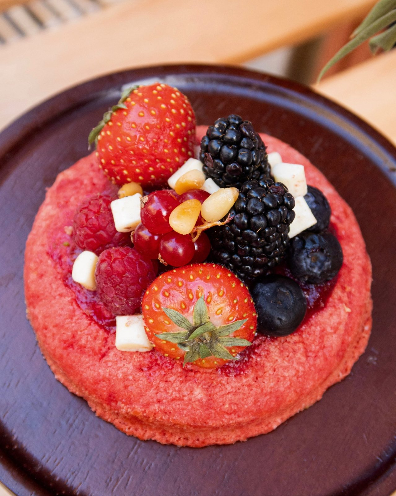

Un cookie, oui, mais avec un cœur de fruits rouges qui réveille tout. Voici une version maison, simple à réussir. Pour 8 gros cookies.
Ingrédients
Compotée : 150 g de fruits rouges (frais ou surgelés), 30 g de sucre, 1 cuillère à café de jus de citron.
Pâte : 125 g de beurre mou, 100 g de cassonade, 50 g de sucre, 1 œuf, 220 g de farine, 1/2 cuillère à café de levure chimique, 1 pincée de fleur de sel, 100 g de chocolat blanc en morceaux.
Finition : quelques fruits rouges frais.
Préparation
- Faites cuire les fruits rouges avec le sucre et le citron 8 à 10 minutes à feu moyen, jusqu'à obtenir une compotée épaisse. Laissez refroidir complètement.
- Fouettez le beurre mou avec la cassonade et le sucre. Ajoutez l'œuf, puis la farine, la levure et le sel. Incorporez le chocolat blanc.
- Formez 8 boules. Aplatissez chacune dans la main, déposez une cuillère à café de compotée au centre et refermez bien.
- Placez les boules 30 minutes au réfrigérateur. Préchauffez le four à 170 °C.
- Enfournez 11 à 12 minutes. Les bords doivent être dorés et le centre encore tendre.
- Laissez tiédir sur la plaque, puis décorez d'un peu de compotée et de fruits frais.
Les conseils du chef
Le passage au froid est indispensable : il évite que les cookies s'étalent et que la compotée s'échappe. Et sortez-les quand ils vous semblent à peine cuits, ils finissent de se raffermir en refroidissant.